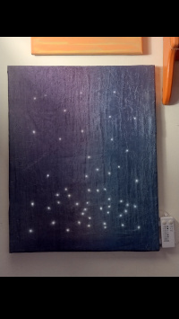

This was a collaborative project where I added non-addressable LEDs to decorative panels as a proof of concept. One of the panels is meant to depict falling, with a denser distribution of lights as the viewer's eye moves down. The other panel depicts constellations.
Since the strand of lights was pre-fabricated, I tried to use the color of the individual LEDs to distinguish between different constellations. Since the strand had a white mode and a color mode, this created an interesting effect where the constellations were much less apparent when the lights were set to white mode. This concept could be further developed to create a hidden pattern or meaning that can be incidentally revealed during the normal operation of a device.

RadioTitle: Dip by Kirk Osamayo
Author: Nicholas Avraamides
Source: freemusicarchive.org
License: CC BY 4.0
|